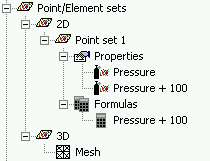
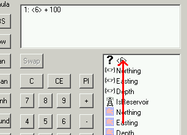

Point/Element sets is a branch in the Data storage tree. A pointset represents a collection of points in space and an elementset represents a collection of elements in space. An elementset or pointset could contain distributions representing values in space. Distributions are the values assigned to each point or element of the corresponding pointset or elementset. The distributions could represent material, initial stress or pressure properties in the model.

The Point/Elementsets branch is divided in a 2D branch containing the two-dimensional pointsets or elementsets and a 3D branch containing the three-dimensional pointsets or elementsets and the mesh. The properties defined on the pointset or elementset are enumerated under the property branch for each elementset or pointset. The user can easily assign the properties by dragging or copying and pasting the properties from the property branch to material, pressure or stress definitions in the model. If an imported pointset was tagged, the property has been assigned to the right type of data already.
Properties are based on distributions (values attached to elements or points) or formulas. Distributions are imported by pointsets or elementsets from files and assigned to properties in the point/element set attributes dialog. Formulas are created and assigned to properties in the point/element set attributes dialog. The formulas are edited in the RPN-Calculator dialog. Formulas assigned to pointsets are enumerated at the formula branch under pointset or elementset.
Formulas can be easily copied to other pointsets or elementsets by dragging the existing formula on the new pointset or elementset. Copy and paste the existing formula onto the new pointset or element set as an alternative to dragging a formula to a pointset or elementset. The operands of the formula copied to a pointset or elementset may have lost the links to distributions and the operands will be invalid. The invalid operands are unassigned and are listed by question marks and a <number> in the RPN-Calculator dialog. The unassigned operand becomes valid by dragging a valid existing operand onto the unassigned operand in the RPN-Calculator dialog.

Right-clicking on Point/Elementsets displays the following context sensitive menu:
| Import |
To import a new pointset / elementset from a file. |
| Create pointset | To create a new point set using the create pointset dialog. |